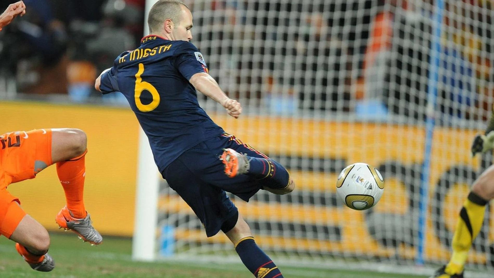

El genio de Fuentealbilla

Andrés Iniesta Luján, nacido el 11 de mayo de 1984 en Fuentealbilla, Albacete, es un destacado futbolista español conocido por su brillante carrera en el F.C. Barcelona y la selección española. Reconocido por su habilidad técnica y visión de juego, Iniesta ha sido una figura clave en numerosos triunfos tanto a nivel de clubes como de selección.
Comenzando su formación en las categorías juveniles del Albacete Balompié, Iniesta se unió al F.C. Barcelona a los doce años, donde desarrolló su talento en "La Masía". Debutó con el primer equipo en 2002 y pasó dieciséis temporadas con el club, ganando un total de 32 títulos, incluidos múltiples campeonatos de liga y de la Liga de Campeones de la UEFA.
A nivel internacional, Iniesta fue parte integral de la selección española durante más de una década, ayudando a conseguir la Eurocopa en 2008 y 2012, así como la Copa del Mundo en 2010, donde anotó el gol decisivo en la final. Su contribución a estos éxitos le valió reconocimientos individuales, incluyendo ser nominado repetidamente al Balón de Oro y ganar el premio al Mejor Jugador de la Eurocopa en 2012.
Fuera del campo, Iniesta ha sido honrado con numerosos premios y reconocimientos, incluyendo la Medalla de Oro de la Real Orden del Mérito Deportivo y una estatua en su honor en Albacete, que conmemora su icónico gol en la final del Mundial de 2010.
En resumen, Andrés Iniesta es considerado uno de los mejores centrocampistas de la historia del fútbol, tanto por sus logros individuales como por sus contribuciones a los éxitos de sus equipos a lo largo de su destacada carrera.
